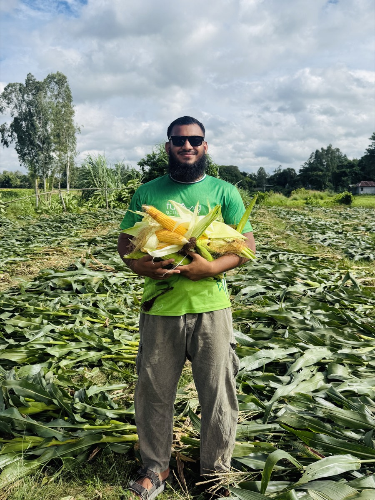

শীতকালে খাবারের অভাব সবাই বোঝেন, কিন্তু বর্ষার সমস্যাটা অন্যরকম। খাবার আছে, তবে সেই খাবারই গরুকে অসুস্থ করে দিতে পারে। বৃষ্টিতে ভেজা ঘাস, কাদামাখা মাঠ, স্যাঁতসেঁতে খড়, জমা পানি, সব মিলিয়ে জুন থেকে সেপ্টেম্বর মাস খামারির জন্য সাবধানে চলার সময়।
এই মৌসুমে অনেক খামারি খামারভেস্ট সাইলেজের মতো এয়ারটাইট বস্তার খাবারে ভরসা রাখেন, কারণ বস্তাবন্দি সাইলেজে বৃষ্টি, কাদা বা কৃমির সংস্পর্শের কোনো সুযোগ নেই। কেন এবং কীভাবে, তা নিচে ধাপে ধাপে বলছি।
জরুরি বিষয়
বৃষ্টিতে ভেজা কচি ঘাস খালি পেটে বেশি খাওয়ালে পেট ফাঁপার (ব্লোট) ঝুঁকি থাকে। পেট হঠাৎ ফুলে গেলে, গরু অস্থির হলে বা মুখ দিয়ে লালা পড়লে দেরি না করে ভেটেরিনারি চিকিৎসক বা উপজেলা প্রাণিসম্পদ অফিসে যোগাযোগ করুন। এটি ফেলে রাখার মতো সমস্যা নয়।
বর্ষায় গরুর সমস্যাগুলো আসলে কোথা থেকে আসে
বর্ষার সমস্যাগুলোর মূল উৎস তিনটি। প্রথমত, ভেজা কচি ঘাসে পানির ভাগ অনেক বেশি। গরু পেট ভরে খেলেও শুকনো খাদ্য (ড্রাই ম্যাটার) কম পায়, ফলে দুধ কমে যায় অথচ পেট ভরা দেখায়। দ্বিতীয়ত, কাদা ও জমা পানিতে কৃমির ডিম আর লার্ভা ছড়ায়। নিচু জমির ঘাসের সঙ্গে সেগুলো গরুর পেটে যায়। তৃতীয়ত, ঘরে রাখা খড় ও দানাদার খাবার আর্দ্র বাতাসে স্যাঁতসেঁতে হয়ে ছত্রাক ধরে, আর ছত্রাক ধরা খাবার গরুর জন্য বিষের মতো।
এই তিনটি জিনিস চিনে রাখলে সমাধানও পরিষ্কার হয়ে যায়: ঘাস দেওয়ার নিয়ম বদলানো, ভেজা মৌসুমে খাবার শুকনো রাখা, আর যে খাবারে ঝুঁকি নেই সেটির ভাগ বাড়ানো।
ভেজা ঘাস দেওয়ার নিরাপদ নিয়ম
বর্ষায় কাঁচা ঘাস একেবারে বাদ দিতে হবে না, নিয়ম মেনে দিলেই চলে।
- ঘাস কেটে সরাসরি না দিয়ে কয়েক ঘণ্টা ছায়ায় ছড়িয়ে রাখুন, যেন উপরের পানি ঝরে যায়।
- খালি পেটে শুধু কচি ঘাস দেবেন না। আগে অল্প খড় বা সাইলেজ দিন, তারপর ঘাস দিন। এতে পেট ফাঁপার ঝুঁকি কমে।
- নিচু, জলাবদ্ধ বা কাদাভরা জমির ঘাস এড়িয়ে চলুন। কৃমির ঝুঁকি সেখানেই সবচেয়ে বেশি।
- মাটির একেবারে গোড়া ঘেঁষে ঘাস কাটবেন না। গোড়ার দিকেই কাদা ও লার্ভা লেগে থাকে।
- একবারে অনেক ঘাস কেটে জমিয়ে রাখবেন না। ভেজা ঘাস স্তূপ করে রাখলে দ্রুত গরম হয়ে নষ্ট হয়।
বর্ষার নিরাপদ খাদ্য তালিকা
ভেজা মৌসুমে লক্ষ্য একটাই: পেট ভরানো নয়, শুকনো খাদ্যের চাহিদা পূরণ করা। সাইলেজ এখানে সবচেয়ে কাজের, কারণ এটি এয়ারটাইট বস্তায় ফার্মেন্ট করা খাবার, বৃষ্টি বা আর্দ্রতায় নষ্ট হয় না এবং সারা বছর একই মান থাকে। একটি সাধারণ দৈনিক ভাগ এমন হতে পারে:
দুধের গাভী
- সাইলেজ: ১৫-২৫ কেজি (সাধারণত ২০ কেজি)
- শুকনো খড়: ২-৩ কেজি
- দানাদার: দুধের পরিমাণ অনুযায়ী, স্থানীয় পরামর্শ মেনে
- পরিষ্কার পানি: সবসময়, জমা বা ডোবার পানি নয়
মোটাতাজাকরণের গরু
- সাইলেজ: ১০-২০ কেজি (সাধারণত ১৫ কেজি)
- শুকনো খড়: ১-২ কেজি
- দানাদার: ওজন ও লক্ষ্য অনুযায়ী
ছাগল ও ভেড়া
- সাইলেজ: ১-২ কেজি
- শুকনো খড় ও পাতা: অল্প পরিমাণে
পরিমাণের বিস্তারিত হিসাব চাইলে ওজন অনুযায়ী সাইলেজ খাওয়ানোর হিসাব গাইডটি দেখুন। আর গরু আগে কখনো সাইলেজ না খেয়ে থাকলে প্রথমবার খাওয়ানোর নিয়ম মেনে ৭ দিনে ধীরে অভ্যাস করান।
খড় ও দানাদার শুকনো রাখার নিয়ম
বর্ষায় সবচেয়ে বেশি টাকা নষ্ট হয় ভেজা খড়ে। কয়েকটি সহজ নিয়ম মানলেই এই ক্ষতি ঠেকানো যায়।
- খড় মাটিতে নয়, বাঁশের মাচা বা ইটের উপর রাখুন, যেন নিচ থেকে ভিজে না ওঠে।
- উপরে টিন বা পলিথিনের ছাউনি দিন, তবে চারপাশ পুরো আটকে দেবেন না। বাতাস চলাচল না থাকলে ভেতরে ভাপ জমে।
- দানাদার খাবার বায়ুরোধী ড্রাম বা ঢাকনাওয়ালা পাত্রে রাখুন। বস্তায় রাখলে দেয়াল থেকে দূরে রাখুন।
- কালো বা সাদা ছত্রাকের দাগ, ভাপসা গন্ধ বা জমাট বাঁধা খাবার গরুকে দেবেন না। ফেলে দেওয়ার কষ্ট চিকিৎসার খরচের চেয়ে কম।
সাইলেজের বস্তা এদিক থেকে নিশ্চিন্ত: না-খোলা এয়ারটাইট বস্তা ৬-১২ মাস ভালো থাকে, বর্ষার আর্দ্রতায় কিছু হয় না। শুধু খোলার পর ২-৩ দিনের মধ্যে ব্যবহার করবেন। বস্তার সাইলেজ ভালো আছে কি না যাচাই করতে নষ্ট সাইলেজ চেনার ৭টি লক্ষণ দেখে নিন।
কৃমি ও রোগ থেকে বাঁচার প্রস্তুতি
খাদ্যের নিয়ম মানার পাশাপাশি বর্ষায় কয়েকটি বাড়তি সতর্কতা দরকার। গোয়ালের মেঝে যতটা সম্ভব শুকনো রাখুন, কাদা জমতে দেবেন না। বর্ষার শুরুতে ও শেষে প্রাণিসম্পদ অফিস বা ভেটেরিনারি চিকিৎসকের পরামর্শ নিয়ে কৃমিনাশক দিন, নিজে থেকে ওষুধ বা মাত্রা ঠিক করবেন না। টিকা ও কৃমিনাশকের হিসাব রাখতে আমাদের ফ্রি টিকা ও কৃমিনাশক রেকর্ড শিট প্রিন্ট করে গোয়ালে টানিয়ে রাখতে পারেন।
পানির বিষয়টিও খাবারের মতোই গুরুত্বপূর্ণ। বর্ষায় চারদিকে পানি থাকলেও গরুকে ডোবা বা জমা পানি খেতে দেবেন না। নলকূপ বা পরিষ্কার উৎসের পানি আলাদা পাত্রে দিন।
বর্ষার খাবারের খরচটাও হিসাবে রাখুন
খামারভেস্ট সাইলেজের দাম সারা বছর একই: প্রতি কেজি ১০ টাকা, ৫০ কেজির এয়ারটাইট বস্তা ৫০০ টাকা, সারাদেশে ক্যাশ অন ডেলিভারি। বর্ষায় ঘাস কাটার লোক, ভেজা খড় ফেলে দেওয়ার ক্ষতি আর চিকিৎসার খরচ ধরলে বস্তার সাইলেজ অনেক ক্ষেত্রে সস্তাই পড়ে। আপনার খামারে মাসে কত বস্তা লাগবে তা হোমপেজের ক্যালকুলেটরে এক মিনিটে বের করতে পারবেন।
খামারভেস্ট Facebook পেজ
মৌসুম অনুযায়ী খামার পরিচালনার পরামর্শ, সাইলেজ স্টক আপডেট ও খামারিদের অভিজ্ঞতা পেতে ফেসবুকে যুক্ত থাকুন।